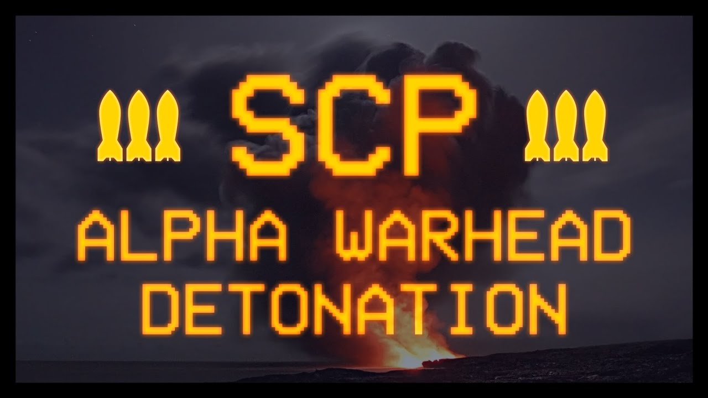

Mecanismo: Alpha Warhead
A Fundação tem o DEVER de PROTEGER A HUMANIDADE e para tal é necessário todos os esforços. Em caso de quebra de contenção, forças tarefas são mobilizadas, mas há situações que tal mobilização se demonstra ineficaz ou tardia. Nestes casos, os sítios podem acionar o protocolo ALPHA WARHEAD.
O mecanismo Alpha Warhead consiste na destruição temporizada da instalação ou de um setor. Esforços de evacuação de pessoal devem ser realizados, mas a segurança da humanidade é a nossa prioridade
Segue abaixo os arquivos de detonação do mecanismo Alpha Warhead:
Em alguns casos, a Fundação pode optar por realizar o Protocolo Nuclear Warhead para assegurar que as anomalias sejam contidas ou destruídas. Alguns sítios possuem ogivas nucleares instaladas para tal mecanismo.
Nota: Em caso de acionamento do protocolo Nuclear Warhead, todos os sinais de radiação devem ser incobertos e a MTF Beta-7 despachada para assegurar o sítio.